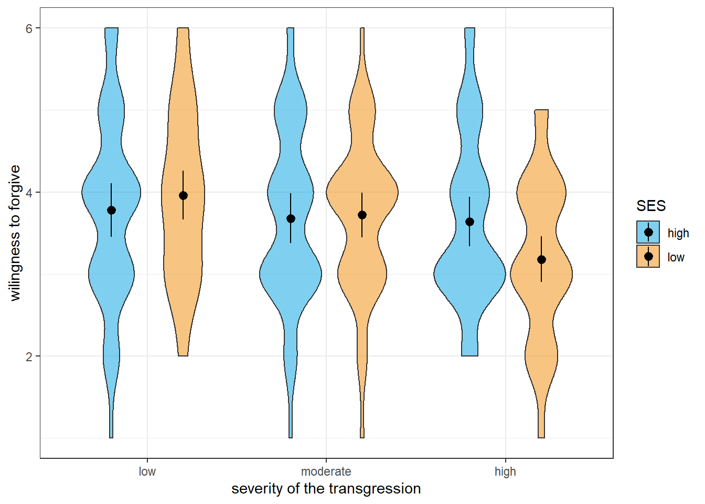

ID difficulty performance
1 1 easy 2.1646466
2 1 moderate 0.7448755
3 1 hard 1.3471731
4 2 easy 2.0451407
5 2 moderate -0.2245538
6 2 hard -1.2001469Repeated measures and mixed ANOVAs
So far, we have covered ANOVAs for designs, in which the explanatory variables varied between subjects. We will now turn to cases, in which all or at least some of these factors vary within subjects. Although these cases are a little more complicated, they follow the same logic of taking the overall variance of the outcome of interest and partitioning it.
In a repeated measures ANOVA (also sometimes referred to as within-subjects ANOVA), we are interested in whether there are mean differences between two or more variables measured among the same participants. This could be the same variable we measure at different times, for example when we are interested in changes over time, or responses to different questions we asked our participants, for example how much they like various colours.
One-factorial repeated measures ANOVA
The one-factorial case of the repeated measures ANOVA is an extension of the paired \(t\)-test. The difference to the one-factorial between-subjects ANOVA is that each participant provides a response at all levels of the within-subjects factor (if at least one of the responses is missing, that participant is lost for the analysis). The question now is how to partition the variance of the observations or - to be more precise - the corresponding sums of squares.
In a first step, we can partition the total sum of squares into variability between participants and variability within participants:
\[SS_{total} = SS_{betweenP} + SS_{withinP}\]
Here, \(SS_{betweenP}\) represents variability that we can attribute to idiosyncrasies of our participants, meaning that participants differ systematically in their responses. Depending on what we are investigating the reasons for such systematic differences could be inter-individual differences in terms of personality, gender, education, or general cognitive ability. They could also stem from differences in task-related aptitude or current motivational or affective states. Whatever the reasons, if there is variation between participants, we can state that, averaged across all levels of our factor, some participants have higher or lower levels in our outcome variable than others.
In most cases, we are more interested in variability within participants represented by the \(SS_{withinP}\). The reason is that this variability contains not only the measurement error (i.e., unsystematic or unexplained variability of responses each participants provides), but also systematic variability between the levels of our within-subjects factor. This means that we can further partition the \(SS_{withinP}\) as follows:
\[SS_{withinP} = SS_{betweenC} + SS_{error}\] Here, \(SS_{betweenC}\) represent the part of the total variability of \(X\) that we can attribute to the variation of our within-subjects factor. This is what we are ultimately interested in when we run a repeated measures ANOVA. The error term \(SS_{error}\) accordingly includes all variability that we cannot attribute to the variation in the within-subjects factor. In sum, we can partition the total sum of squares as follows:
\[SS_{total} = SS_{betweenP} + SS_{betweenC} + SS_{error}\] The first step is to compute the total sum of squares. We do so by collapsing across all participants \(i\) and all levels of the within-subjects factor. Thus, our total sum of squares looks as usual:
\[SS_{total} = \sum_{i=1}^{N} (x_i - \bar{x})^2\]
We next compute the \(SS_{betweenP}\), for the sake of completeness. Technically, we do not really need it because the information we are actually interested in lies completely within participants. In order to compute the \(SS_{betweenP}\), we pretend that there is no more variability within participants. We can so by replicate each participants’ responses by their mean across all factor levels. That is, we pretend that a participant always responds with the exact same score on all measurements.
\[SS_{betweenP} = J\sum_{i = 1}^{N}(\bar{x_i}-\bar{x})^2 \]
Here, \(J\) is the number of factor levels and \(N\) is the sample size.
We next compute the \(SS_{withinP}\). Since we are only interested in how much variation there is in the various responses participants provided, we must pretend that there is no more variability between participants. We do so by substituting the grand mean \(\bar{x}\) with each participant’s own mean response across all factor levels \(\bar{x_i}\):
\[SS_{withinP} = \sum_{i=1}^{N}\sum_{j=1}^{J}(x_{ij}-\bar{x_i})^2\] Here, \(N\) is again the sample size, \(J\) is the number of factor levels, \(X_{ij}\) is the response of the \(i\)th participant to the \(j\)th level of our factor, and \(\bar{x_i}\) is the mean response of the \(i\)th participant across all factor levels.
Now that we have computed the \(SS_{withinP}\), it is time to compute the variability in our data that is attributable to the variation of our factor, namely \(SS_{betweenC}\). We compute is in the same fashion in which we computed the \(SS_{between}\) in the one-factorial case, that is, we substitute each individual response within one factor level by the respective mean response.
\[SS_{betweenC} = N\sum_{j=1}^{J}(\bar{x_j}-\bar{x})^2\] Here, \(N\) is the sample size, \(J\) is the number of factor levels, \(\bar{x}\) is the grand mean, and \(\bar{x_j}\) is the cell mean for the \(j\)th factor level.
Now that we know both the variability within participants \(SS_{withinP}\) and that part of it that we can attribute to variability in our factor \(SS_{betweenC}\), we can compute \(SS_{error}\) via simple subtraction:
\[SS_{error} = SS_{withinP} - SS_{betweenC}\].
We can now compute the \(F\)-statistic that will tell us whether the variability between the factor levels is large enough to constitute a significant effect. To do so, we compute the \(MS_{betweenC}\) and \(MS_{error}\) by dividing the respective sums of squares by their degrees of freedom and then take their ratio:
\[\frac{MS_{betweenC}}{MS_{error}} = \frac{\frac{SS_{betweenC}}{J-1}}{\frac{SS_{error}}{(J-1)\times(N-1)}} = F_{J-1;(J-1)\times{(N-1)}}\] Just as in the between-subjects case, we can now test whether the within-subjects factor, let’s call it \(A\), has an effect on the outcome variable. Remember that:
\(\alpha_j = \mu_j - \mu\)
This means that the effect of the \(j\)th level of factor \(A\), \(\alpha_j\) is the difference between the true group mean \(\mu_j\) and the true grand mean \(\mu\).
Just as in the between-subjects ANOVA, the Null hypothesis is that all \(\alpha_j\) are zero (i.e., all cell means are equal). The alternative hypothesis is that not all group means are equal or, put differently, that at least one of the \(\alpha_j\) is non-zero.
\(H0:\alpha_j = 0 \quad \forall j\)
\(H1: \lnot H_0\)
Running a repeated measure ANOVA in R
Since we already know how to run between-subjects ANOVAs in R, it is fairly easy to run a repeated measures ANOVA. We will use the same package and function we used for the between-subjects ANOVAs, namely the aov_ez function from R package afex. The only difference is that we will use the function argument wihtin instead of between to tell R the name of our within-subjects factor.
As always, we need some data first. Let’s assume that we ran a study with a within-subjects design, in which 30 participants worked three memory tasks that only differ in difficulty (let’s assume that we counterbalanced the order so we do not need to concern ourselves with order effects). In other words, we have a within-subjects factor called difficulty with three levels, and we can now test whether participants’ task performance differs according this factor. We will call the data frame containnig the data df1. Here is what the data looks like.
We can now run the repeated measures ANOVA using the following syntax:
# load the library afex
library(afex)
# run the ANOVA and save it as a new object
aov1 = aov_ez(id = 'ID', dv = 'performance',
within = 'difficulty', data = df1)
# return the result of the ANOVA
aov1If we run the code above, R will produce the following output in the console:
Anova Table (Type 3 tests)
Response: performance
Effect df MSE F ges p.value
1 difficulty 1.91, 55.25 0.49 27.22 *** .255 <.001
---
Signif. codes: 0 '***' 0.001 '**' 0.01 '*' 0.05 '+' 0.1 ' ' 1
Sphericity correction method: GG The information is similar to the one we got in the between-subjects case, that is, R displays the name of our factor, \(F\)-statistic and its degrees of freedom, an estimate of the effect size \(\eta_2\), and the \(p\)-value.
Note that he analysis yields fractional degrees of freedom that are slightly lower then the ones we would have expected based on the descriptions above. The reason is that the aov_ez function corrects for violations of the sphericity assumption per default using the Greenhouse-Geisser method.
As you may recall, sphericity is one of the assumptions we make in order for repeated measures ANOVAs to provide meaningful results. Sphericity means that the variances of all pairwise differences of our factor levels are equal. In a design with a three-level factor, this means that we have three possible differences: \(\Delta_{1;2}\) is the difference between factor levels 1 and 2, \(\Delta_{1;3}\) is the difference between factor levels 1 and 3, and \(\Delta_{2;3}\) is the difference between levels 2 and 3. The assumption of sphericity in this case states that if we computed the variances of each of the \(\Delta\)a, they would all be equal.
Often, people test whether this assumption is violated and decide only to control for its violation when the respective test does not justify retaining the Null hypothesis that the variances of the pairwise differences between factor levels are equal. However, similar to the paired \(t\)-test, R takes a different approach and corrects the degrees of freedom for non-sphericity unless we explicitly ask it not to.
Generally speaking, there is no reason to turn off the default Greenhouse-Geisser correction. However, in some cases, we may want to run the ANOVA without correcting for egocentricity (for example, when trying to reproduce results of published studies), or we may want to change the correction method to the Huynh-Feldt method.
We can change the default for the correction of non-sphericity using function argument of the aov_ez function called anova-table. This argument is a list that allows us to change several aspects of the ANOVA, but for now we only need to define one parameter in that list called correction, which is a character string indicating how we want to correct for non-sphericity in an aNOVA with at least one within-subjects factor. It defaults to “GG” (Greenhouse-Geisser method), but we can alternative set it to “none” (9no correction) or HF(Huynh-Feldt method).
Let’s say we want ot turn off the non-spheticity correction. Here is what the syntax looks like:
# load the library afex
library(afex)
# run the ANOVA and save it as a new object;
# also turn off correction for non-sphericity
aov1b = aov_ez(id = 'ID', dv = 'performance',
within = 'difficulty', data = df1,
anova_table = list(correction = 'none'))
# return the result of the new ANOVA
aov1bAs we can see in the console, the degrees of freedom now match the ones stated above. Since the violation of sphericity was not severe in the first place (we can see this from the corrected degrees of freedom being very close to the uncorrected ones), the results remain qualitatively similar.
Anova Table (Type 3 tests)
Response: performance
Effect df MSE F ges p.value
1 difficulty 2, 58 0.47 27.22 *** .255 <.001
---
Signif. codes: 0 '***' 0.001 '**' 0.01 '*' 0.05 '+' 0.1 ' ' 1Disentangling significant effects in repeated measures ANOVAs
As in the between-subjects case, a significant effect in a repeated measures ANOVA becomes difficult to interpret without further analysis once we have three or more factor levels. The simple conclusion that “not all means are equal” is rarely satisfactory. Therefore, we need to investigate where exactly the mean differences originate using post-hoc comparisons.
The good news is that it works pretty much in the same fashion as it does for between-subjects ANOVAs. That is, we can use the emmeans function from the emmeans package to test pairwise comparisons or custom contrasts for statistical significance. If we were, for example, interested in the priwise comparisons, the syntax would look as follows:
$emmeans
difficulty emmean SE df lower.CL upper.CL
easy 1.1221 0.148 29 0.820 1.424
hard -0.0738 0.177 29 -0.435 0.288
moderate 0.9778 0.181 29 0.608 1.347
Confidence level used: 0.95
$contrasts
contrast estimate SE df t.ratio p.value
easy - hard 1.196 0.160 29 7.472 <.0001
easy - moderate 0.144 0.194 29 0.743 0.7402
hard - moderate -1.052 0.175 29 -6.006 <.0001
P value adjustment: tukey method for comparing a family of 3 estimates Note that since ‘tukey’ is the default for the correction argument, we could have omitted it. Now let’s have a look at the console output.
suppressMessages(library(emmeans))
emmeans(aov1, specs = 'difficulty',
contr = 'pairwise', correction = 'tukey')One thing is worth noting here: other than in the between-subjects case, the post-hoc contrasts do not benefit from increased degrees of freedom. Instead, they are equivalent to simple paired \(t\)-tests. The reason is that, here, we already use information from all available participants when estimating the error term of the pairwise comparisons.
Repeated measures ANOVAs with multiple factors
Just as in the between-subjects case, we can run a repeated measures ANOVA with two or more within-subjects factors. Here, we will focus on the two-factorial case, but from there, we can easily extrapolate to more complex designs.
If we have two within-subjects factors \(A\) and \(B\), systematic variance between conditions can stem from the main effects of these factors or their interaction. As such, we can decompose the variability between conditions represented by \(SS_{betweenC}\) as follows:
\[SS_{betweenC} = SS_A + SS_B + SS_{A \times B}\] The test logic is, again, similar to that of the two-factorial between-subjects ANOVA, that is, we can test the two main effects and the interaction effect for statistical significance using \(F\)-ratios. To do so, we first need to compute the \(MS\) of the effect we are interested in as the ratio of its \(SS\) and its degrees of freedom, and the divide this \(MS\) by the \(MS_{error}\) which we compute in the exact same way as we did in the one-factorial repeated measures ANOVA (see above).
Using that approach, we can test: \(H_{0_A}\) (all marginal means of factor A are equal), \(H_{0_B}\) (all marginal means of factor B are equal), and \(H_{0_{A \times B}}\) (the combination of \(A\) and \(B\) has no effect beyond the the respective main effects of \(A\) and \(B\)).
Running two-factorial repeated measures ANOVAS in R
Before we can look at the code for a two-factorial repeated measures ANOVA, we need some data. Let’s assume we ran an experiment studying 50 participants’ willingness to forgive a transgression by another person in a fictional situation on a scale from 1 (not at all) to 6 (certainly). Let’s further assume that we manipulate two variables: the severity of the transgression (low, moderate, or high) and the apparent socio-economic status (SES) of the other person (low vs. high). This leaves us with a \(2 \ times 3\) within-subjects design. Here is an excerpt of some simulated data for this study which are contained in the data df2.
ID severity SES forgive
1 1 low high 3
2 2 low high 3
3 3 low high 3
4 4 low high 3
5 5 low high 3
6 6 low high 4We can now run the two-factorial repeated measures ANOVA using the aov_ez function. Since we have two within-subjects factors, we need to feed the function a character vector containing both factor’s names as the within argument. here is what the code looks like:
# run a two-factorial within-subjects ANOVA
aov2 = aov_ez(id = 'ID', within = c('severity', 'SES'),
data = df2, dv = 'forgive')
# display the ANOVA results
aov2Once we run the code above, here is what appears in the console as output:
Anova Table (Type 3 tests)
Response: forgive
Effect df MSE F ges p.value
1 severity 1.93, 94.57 0.53 10.57 *** .032 <.001
2 SES 1, 49 0.34 1.40 .001 .243
3 severity:SES 1.55, 76.13 0.81 4.47 * .017 .022
---
Signif. codes: 0 '***' 0.001 '**' 0.01 '*' 0.05 '+' 0.1 ' ' 1
Sphericity correction method: GG As we can see, the ANOVA table R returns contains information on the two main effects and the interaction. For the two significant effects, the main effect of the severity of the transgression and the interaction of severity and SES, we can also see that the aov_ez function adjusted the degrees of freedom to adjust non-sphericity. There is no such adjustment for the main effect of SES because it has only two levels (if we wanted to turn the adjustment off or set it to the Huynh-Feldt method, we could do it using the anova_table argument, see above).
Disentangling effects in a two-factorial repeated measure ANOVA
Similar to the between-subjects case, how we go about disentangling the effects in a two-factorial repeated measure ANVOA depends critically on whether the interaction was statistically significant. Remember that, as general rule, we should only interpret main effects if there is either no evidence of an interaction in our analysis or if the interaction is ordinal.
Let’s have a look at the results using a violin plot (the black dots show the means for each condition while the lines behind them represent the 95% confidence intervals):

The graphical inspection already suggests that we do not have an ordinal interaction, which means that we should focus on the interaction when interpreting the results and not interpret the main effect of severity. Of course, we could also run a statistical analysis instead of the visual inspection by checking for each level of the severity factor whether there is a significant effect of SES in the same direction.
We can do that using the emmeans function. In a first step, we would only focus on the effect of SES for each level of severity.